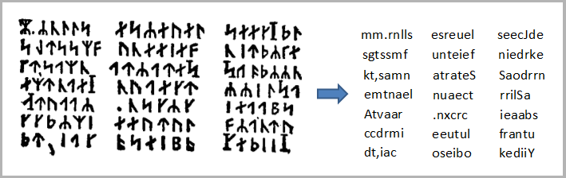

El código Secreto de Arne Saknusseemm
El profesor Lindenbrock, llegó con un libro muy antiguo y se encerró en su despacho. Se sentó en su gran sillón
forrado de terciopelo de Utrech, contemplando aquel objeto con profunda admiración.
- ¡Qué libro! ¡ Qué libro! ¡Magnífico!
Después de un rato me pidió que entrara y me lo monstro.Lo sostuve en mis manos, y luego de admirarlo por un
momento, pregunte:
- ¿Cúal es el título de este maravilloso libro?
- ¡Esta obra - respondió mi tío animándose - es el "Heimskringla", de Snorri Sturluson, el famoso autor
islandés del siglo XII! ¡Es la crónica de los príncipes noruegos que reinaron en Islandia! ¡Es un manuscrito
rúnico!
- ¿un manuscrito rúnico?
- Asi es. Las runas - prosiguió- eran unos caracteres de escritura usada en otro tiempo en Islandia, y, según
la tradición, fueron inventados por el mismo Odín...
Mientras mi tio seguía admirando el libro, haciendo movimientos suaves para no maltratarlo y asi, deslizándose
de entre las hojas del libro, cayó al suelo un pergamino grasiento. Mi tío se apresuró a recogerlo con indecible
avidez.
Y al mismo tiempo desplegaba cuidadosamente sobre la mesa un trozo de pergamino de unas cinco pulgadas de largo
por tres de ancho, en el que había trazados, en líneas transversales, unos caracteres mágicos.
DECIFRANDO EL ENIGMA
En criptografía, el cifrado es un procedimiento que utiliza un algoritmo de cifrado con cierta clave (clave de cifrado) para transformar un mensaje, sin atender a su estructura lingüística o significado, de tal forma que sea incomprensible o, al menos, difícil de comprender a toda persona que no tenga la clave secreta (clave de descifrado) del algoritmo. Las claves de cifrado y de descifrado pueden ser iguales (criptografía simétrica), distintas (criptografía asimétrica) o de ambos tipos (criptografía híbrida). El juego de caracteres (alfabeto) usado en el mensaje sin cifrar puede no ser el mismo que el juego de caracteres que se usa en el mensaje cifrado. Un criptograma es un escrito en clave. Normalmente cada signo que se emplea en este tipo de mensajes se corresponde con una letra del alfabeto. De esta manera, un número o una imagen equivale a un determinado signo del abecedario.

Traducción del criptograma: "Desciende al cráter del Yocul del Sneffels, cuando la sombra del Scartaris llega a acariciar antes de las calendas de Julio, audaz viajero, y llegarás al centro de la Tierra, como lo hice Yo. Arne Saknussemm".